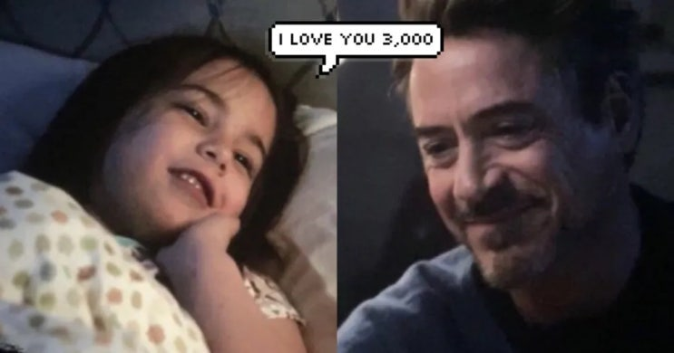
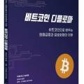

는 책
![[서평] 비트코인 디플로마 이미지 1](../../assets/images/note-38/p219-01.jpg)
저는 이미 pdf 버전으로 읽어 보았습니다
축하할 만한 일입니다.
수많은 똥코이너들이 쓴 책들이 범람하는 한국 도서 시장에 드디어 오래간만에 제대로 된 비트코인 책
이 나왔습니다.
이 책은 아이들의 비트코인 교육을 위해 비영리 단체인
Mi Primer Bitcoin 에서
만든 책으로 한국의 유명 비트코이너이신
소머리 형님
'아토믹 비트코인' 님께서 한국어로 정식 번역을 하였습니다.
My First Bitcoin - Mi Primer Bitcoin
On September 7, 2021, El Salvador became the first country in the world to recognize Bitcoin as legal tender.
miprimerbitcoin.io
![[서평] 비트코인 디플로마 이미지 2](../../assets/images/note-38/p220-02.jpg)
ATOMIC???ITCOIN | Notion
비트코인 디플로마 (Bitcoin Diploma) 번역본 엘살바도르 공립 고등학교에서 수백 명의 학생들이 수료한 자료입니다.
atomicbtc.notion.site
책은 교사가 어린이들을 가르치기 위한 워크북의 형태로 구성되어 있습니다. 교사가 하나의 주제에 대해서 소개하고, 아이
들이 실습을 하고, 아이들과 교사가 강평을 하는 형태입니다. 아이들 교재라는 점에서 눈치를 채셨겠지만
상당히 쉽게 구
성되어있으면서도 동시에 매우 정확하게 비트코인을 설명
하고 있습니다.
최근 개똥같은 철학을 비트코인에 엮어서 여러가지 말도 안되는 테마를 끼워 책을 팔아 먹거나 (먼산...) 단순히 비트코인
가격 급등락을 이야기 하는다가 그래서 다음 폭등은 뭔데 하는 (먼산...) 책들이 많은데 비트코인을 제대로 이해하고 싶다
면 그런 똥같은 책 보지 마시고 이 책 읽는게 한 3000 만큼 사랑해... 아니고 3000배쯤 날 것 같습니다.

흐엉엉엉어 ㅠㅠ 아이언맨 아저씨 ㅠㅠ
아래 목차를 보시면 알겠지만 다루어야 할 것은 모두 다룹니다.
비트코인 코딩하는 법 빼고 모든 면에 대해서 다룬 일종의 백과사전같은 책이라고 보셔도 됩니다.
목차
제 1장 소개: 화폐 시스템
1.1 수업 활동: 돈 소개
1.2 오늘날 돈에 어떤 문제가 있을까요?
1.3 돈의 정의
제 2장 돈의 역사, 진화 및 평가 절하
2.1 돈의 역사
2.2 수업 활동: 물물교환 게임
2.3 시간에 따른 화폐의 진화
2.4 Fiat로의 갑작스러운 전환
2.5 중앙 은행
2.6 수업 활동: 부분 준비금
제 3장 법정화폐와 중앙 집중화의 효과
3.1 수업 활동: 경매!
3.2 인플레이션
3.3 검열
3.4 제한
3.5 중앙화 vs. 탈중앙화
3.6 결론
제 4장 비트코인
4.1 비트코인은 왜 만들어졌을까요?
4.2 비트코인 소개
4.3 비트코인과 법정화폐의 차이
4.4 비트코인 구성요소
제 5장 비트코인의 구매, 보관 및 이동
5.1 입금 및 출금 통로
5.2 비트코인 보관
5.3 거래 주기(On-Chain)
제 6장 가치 저장 및 지불 네트워크로서의 비트코인
6.1 이중 지불 문제
6.2 메모리 그룹 또는 멤풀
6.3 수업 활동: 거래가 확인되었지만 승인되지 않았습니다
6.4 비트코인 네트워크 (On-Chain)
6.5 라이트닝 네트워크 (Off-Chain)
제 7장 채굴자와 비트코인 채굴
7.1 채굴 노드
7.2 해시의 중요성 이해하기
7.3 채굴
제 8장 희소성, 비용, 가격 및 변동성
8.1 블록 보상의 중요성
8.2 반감기
8.3 시간 경과에 따른 비트코인의 가치
8.4 채굴자에 대한 보상
8.5 무엇을 또는 누구를 조심해야 할까요?
제 9장 비트코인의 현재와 미래
9.1 사용되는 에너지
9.2 혁신
9.3 비트코인과 엘살바도르의 미래
9.4 수업 활동: 비트코인 시뮬레이터
제 10장 최종 프로젝트
왜 비트코인일까요?
비영리 단체에서 만들었고, 아토믹 님도 자원봉사로 참여한 프로젝트이기 때문에 본 책은 누구나 무료로 보실 수 있습니
다. 아래 아토믹 비트코인님 웹사이트(원드라이브링크)에서 무료로 받을 수 있는 PDF 버전을 받으시거나 직접 업로드된
파일을 다운로드 받으시면 됩니다.
Microsoft OneDrive
onedrive.live.com
첨부파일
(korean)Mi Primer Bitcoin - Libro de Trabajo V30 - FINAL 1
전기통신사업법 및 시행령에 따라 불법 촬영물 등 여부를 검토 중입니다.
잠시만 기다려주세요
파일 다운로드
하지만 종이책을 선호하는 분도 있기에 혹시 종이책을 구매하고 싶으신 분이라면 아래 링크로 가보시면 되겠습니다.

비트코인 디플로마 | - 교보문고
비트코인 디플로마 |
product.kyobobook.co.kr
이번에 종이책을 팔아서 남은 수익은 모두 엘살바도르에 기부가 된다고 하네요. 이러한 의미에 발 맞추어 사토시 마켓에서
도 어떠한 대가도 받지 않고 판매 대행을 시작했습니다.
[실물책/사전판매] 비트코인 디플로마
개요 이 책은 비트코인을 법정화폐로 채택한 나라 엘살바도르의 공립학교에서 펴낸 책을 한국어로 번역한 워크북 교재입
니다. 비트코인을 매개로 화폐 제도와 역사, 경제 원리에 대해 체계적으로 잘 요약 정리되어 있어 금융 시스템 및 비트코인
에 적용된 블록체인, 암호학 등의 기술에 대한 기초 이해를 높이는 최적의 교재입니다. 저자 및 역자 소개 ATOMIC BIT
satoshimarket.biz
비트코인은 그 이해가 쉽지 않아서 수많은 사짜가 들어와 사람들을 현혹하는 분야입니다. 비트코인 빨다가 기승전 자기가
만든 코인 파는 자도 있고 코인보다 더 좋은 투자처 있다고 사람들 모아다가 돈 끌어서 사라지는 놈도 있습니다. 애초에 비
트코인을 공격하는게 목적인 사람도 있어서 헛소리 뉴스도 많이 나옵니다
그러면서 채굴회사에 투자했다 카더라
.
하지만 이 책은 정말 정확하게 자세히 설명하고 있어서 소음으로 인한 혼란 없이
제대로 비트코인을 이해할 수 있는 '신
호'를 던져주는 빛과 같은 책입니다.
다만 이렇게 훌륭한 책이지만 10점이 아닌 9점을 준 이유는, 이 책이 애초에 워크북으로 구성되었기 때문에
선생님이 없
다면 혼자 공부해서 이해하기는 좀 어려운 부분도 있기 때문
입니다.
그런데 재미있는건 아토믹 비트코인님이 앞으로 동영상을 통해 인터넷에서 강의도 열고 무료로 선생님 역할을 해주실 예
정이라고 하네요. ㅋㅋㅋ 고마워요 소머리형님.
소머리 형님은 비트코인 많아서 병신들 처럼 돈 몇 푼 벌려고 노력 하실 필요 없다 카더라
저도 이미 읽었음에도 불구하고 애들하고 같이 공부할려고 한 권 사고 배송 대기 중입니다.
꼭 사지 않더라도 다운로드 받으셔서 읽어보길 강추합니다.
끝.
다시 한번 : 아래 링크에서 무료로 다운 받을 수 있습니다!
Microsoft OneDrive
onedrive.live.com
첨부파일
(korean)Mi Primer Bitcoin - Libro de Trabajo V30 - FINAL 1
전기통신사업법 및 시행령에 따라 불법 촬영물 등 여부를 검토 중입니다.
잠시만 기다려주세요
파일 다운로드